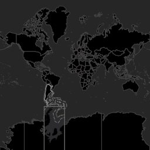
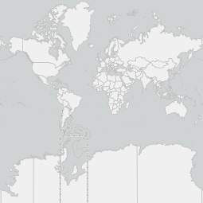
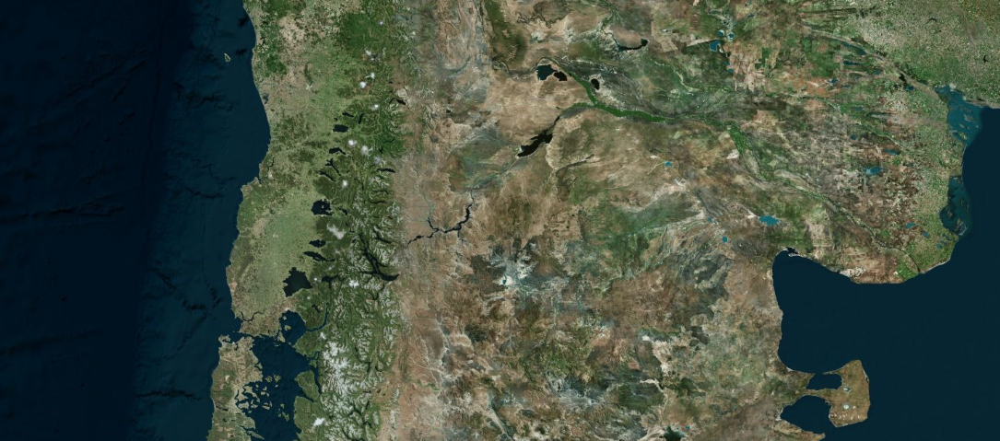

Inicio
Bienvenidos a
MAITEN
el mapa interactivo técnico
de espacios naturales de Neuquén.
El visor que se muestra en este momento es una herramienta de planificación y gestión donde se puede analizar los espacios verdes, azules y las áreas protegidas de la provincia del Neuquén y sus características.
Para colorear las capas según su capacidad de
absorción ,
porcentaje de
arbolado o su
superficie en
m2, utilice el menú lateral en la seccion
clasificación
Para mover el mapa a una localidad específica, puede
elegir cualquiera de la lista en la pestaña de localidades
y se desplegará un menú con información personalizada de cada una.
Para conocer el radio de cobertura específico de una espacio verde, azul o un área protegida, clickee sobre el objeto.
Clasificaciones
Al hacer click en las capas de Espacios Verdes, Espacios Azules y Areas Naturales Protegidas se mostrará el radio de cobertura del espacio seleccionado.
Absorcion
Porcentaje de Absorcion de Agua en funcion de los m2
Arbolado
Porcentaje de Arbolado en funcion de los m2
Superficie
Superficie en m2
Tipo de Espacios
Clasificacion segun el tipo de espacio verde
Acerca de
En el marco de la Agenda 2030 y con la finalidad de dar cumplimento a los Objetivos de Desarrollo Sostenible, queremos fortalecer la gobernanza urbana desde una dimensión ambiental, mejorando la resiliencia y las acciones para hacer más ecológicas las ciudades. Aspiramos a una ciudad sostenible, que propicia el derecho al ambiente sano, para un desarrollo humano armonioso y respetuoso con la naturaleza.
Por lo tanto, el objetivo de esta herramienta es poder brindar a la comunidad una fuente de datos confiable y actualizada con información respecto a los espacios verdes, azules y áreas protegidas con los que cuentan cada una de las localidades de nuestra provincia. Este visor ha sido desarrollado por el equipo de la Dirección General de Información Territorial, de COPADE.
Este visor ha sido desarrollado por el equipo de la Dirección general de Información Territorial, de COPADE.
Para conocer la metodología empleada para la construcción de esta herramienta puede consultar el informe técnico aquí
Localidades
Clickee la localidad que desee localizar. El mapa se movera a donde haya selecionado.
Cambiar mapa base
Selecione una mapa base para mostrar en el visor, los mapas
mas oscuros pueden mejorar el contraste pero dar menos
visibilidad a los detalles.
Todos los mapas de esta web usan los mapas del IGN
Argenmap.
-
Mapa oscuro
 -
Mapa gris
 -
Mapa Satelital
 -
Sin Mapa Base
Detalle de localidad
Neuquen Capital
Espacios Verdes
Espacios Verdes por Habitante
-
La Organización Mundial de la Salud (OMS) establece como parámetro
mínimo 9 m²/habitante
y la Organización de las Naciones Unidas (ONU) recomienda un valor ideal de 16 m²/habitante .
- La Organización Mundial de la Salud (OMS) establece como parámetro mínimo 9 m²/habitante y la Organización de las Naciones Unidas (ONU) recomienda un valor ideal de 16 m²/habitante .
Neuquen Capital
29,4 m2
x
Habitante
Mínimo
9 m2
x
Habitante
Recomendado
16 m2
x
Habitante
- Cobertura Forestal: Proporción de cobertura forestal en relación al área total del espacio verde.
Cobertura Arbórea
- Mobiliario No Posee: Posee menos del básico predeterminado
-
Mobiliario Básico:
Espacio que contiene el mobiliario predeterminado:
- Parque: luminaria, bancos, cestos
- Plaza: luminaria, bancos, cestos, juegos para niños.
- Plazoleta: luminaria, bancos, cestos.
- Corredor: luminaria, cestos.
- Mobiliario Superior: Contiene el mobiliario adicional al predeterminado para el tipo
Tipo de Mobiliario
- Suelo Absorbente: Proporción de terreno absorbente en relación al área total de un espacio verde de uso público.
Terreno absorbente